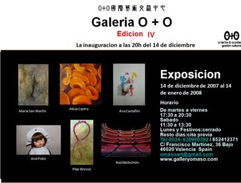

Exposición del 14/12/2007 a 14/01/2008
viernes, 14 de diciembre de 2007
{kind=link}

{kind=link}
El 14 de diciembre se inauguró en la Galería O+O (Oriente & Occidente) de Valencia una exposición colectiva con trabajo de María San Martín, Alicia Castro, Ana Castañer, Ana Pobo, Pilar Bressó y Raúl Belinchón. Este grupo de artistas forman una variada muestra de pinturas, esculturas y fotografías. María San Martín y Alicia Castro presentan obras matéricas y conceptuales; Alicia, introduce aspectos de la biología, mientras que María, más conceptual, expone pinturas y tres esculturas de bronce de mujeres sentadas. En la obra lírica de Pilar Bressó podemos ver una narrativa plástica donde utiliza el grafismo de clara influencia oriental. La artista de Teruel, Ana Castañer muestra su estilo peculiar con sus acuarelas. Ana Pobo compone con sus fotografías «el paso del tiempo», un recorrido por los recuerdos pasados con fondo de papel pintado y muñecas mariquita Pérez. Y por último Raúl Belinchón, importante fotógrafo valenciano reconocido internacionalmente que trae varias fotografías de su serie de teatros.
Oriente & Occidente es mucho más que una galería de arte, Gestión Cultural O+O es una pionera en la ciudad de Valencia en el diálogo entre Occidente y Oriente, especialmente entre China y España. Inició su andadura en Mayo de este año, con sede Valencia-Taiwan bajo la dirección de Enriqueta Hueso, aunque con expectativas de ampliar al resto de China y Japón. Este centro busca ser el medio donde se produzca el intercambio de obras y artistas de las dos culturas, fomentando y apoyando su difusión. Con una clara vocación internacional, de carácter mixto, la institución realiza exposiciones multiculturales, proyectos itinerantes, conferencias, talleres (caligrafía china, pintura oriental, grabado), así como intervenciones en ferias internacionales (Feria ShContemporary). No falta un gran trabajo editorial de ediciones de libros, catálogos de exposiciones y pronto la revista O+O de Arte y Cultura.
Gestión Cultural O+O cuenta con varios proyectos muy interesante, tanto de exposiciones e intercambios, como de ediciones para 2008. Para el 14 de enero tiene preparada una exposición de 32 artistas orientales de un grupo internacional de Taiwan llamado Tsai Mo. En febrero podremos disfrutar de la exposición individual del fotógrafo londinense Simon Head, con un proyecto riguroso y conceptual de fotografías y vídeo sobre las mareas del Támesis. También en 2008, O+O prepara una muestra de 20 artistas en el Hong Gan Museum. Desde Art Signal E-News os tendremos informados de estas interesantes propuestas.